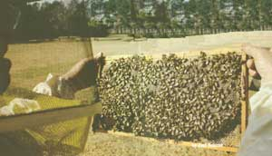
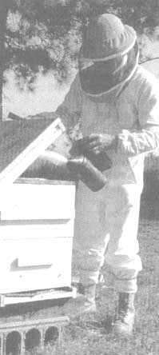
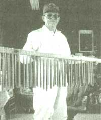

Issue # 130 - February/March 1992
THE RACKLEY PLACE isn’t that hard to find. It lies off a North CarTHE RACKLEY PLACE isn’t that hard to find. It lies off a North Carolina blacktop that meanders past cotton fields, cattle, and patches of sea-green collards. I was told to look for a big willow on the right just past a red-brick Baptist church and be on the lookout for two offering COLLARDS and HONEY FOR SALE. Three dirt roads later I pulled the truck into a yard as neat and spare as Quaker kitchen. Collards filled a garden nearby, their pungent aroma piercing the fall air while eight snow-white beehives stood like squat sentinels behind it. olina blacktop that meanders past cotton fields, cattle, and patches of sea-green collards. I was told to look for a big willow on the right just past a red-brick Baptist church and be on the lookout for two offering COLLARDS and HONEY FOR SALE. Three dirt roads later I pulled the truck into a yard as neat and spare as Quaker kitchen. Collards filled a garden nearby, their pungent aroma piercing the fall air while eight snow-white beehives stood like squat sentinels behind it.
I parked the truck next to a mobile home and the door opened expectantly. Elegantly appointed in work books and white jumpsuit was Mr. Irvin Rackley, master beekeeper.
The ancient art of the apiarist is almost a religion in North Carolina, which boasts more beekeepers than any other state in the nation. About 12,000 beekeepers, mostly hobbyists, practice the Zenlike craft that blends the practicality of pollination with a profitable sideline business. I say Zen because I believe it takes meditation and a certain purity of spirit to blithely work with something akin to a swarm of hypodermic needles.
But the rewards are hard to beat. The botanical payoffs of bees run the gamut from acerola to zigzag clover: Bees boost the production and quality of any garden or orchard. Many beekeepers rent their hives to farmers for the blooming season, and the resulting honey they produce in the process is pure gravy. A good hive, after all, can produce 100 pounds of honey a year. And then there are the spinoffs: beeswax candles, honey candy, mead or honey wine, and the latest health craze, bee pollen.
"I don't make a big show of it," Rackley says as we walk into his house. "Most of what I do is for hobby and for my strawberries. But I am hooked on it. I have never seen anything in my life quite as fascinating as working with bees." This is strong praise coming from a man who left his family's small farm in Wallace, North Carolina, in 1939 and never looked back. He was drafted by the army in World War II and sent to India. After the war he went to work for the Atlantic Coastline Railroad. He spent the next 42 years directing freights and passenger trains throughout the South.
But the farm never really left him, and when he retired in 1983 he started growing a couple of acres of strawberries and collards on a small plot of land in Edgecombe County. That's when he got into bees. But it wasn't entirely new to him. "My grandmother kept a hive 25 feet outside her back door," Rackley says. "She used to go out with a bee veil and a smock-nothing on her hands-and with a smoker and a butcher knife she'd open up that hive. slice out the comb, bring it in the kitchen, and divide it up between the children. We'd put it on hot biscuits baked in a wood cookstove," Rackley says, smiling at the memory.
The county agent told him he needed two hives for his strawberries, so he purchased a pair from a local beekeeper. One hive was gentle and easy to work with; the other was mean as hell. "You couldn't go out the door without bees buzzing around your head wanting to zap you." Rackley gave those bees to another beekeeping friend and ordered a package of Italian bees from a bee supplier. 'They were gentle as kittens," he says. "You could stick your hand right in there and they wouldn't sting you."
There were no native honeybees buzzing on our shores until the colonists brought them over from Europe. Today, beekeepers use three major races: Italian, Caucasian, and Camiolan-a gray bee from Russia. Africanized bees are just starting to make their way into Texas, and despite their bad press Rackley thinks beekeepers will be able to handle them should they reach North Carolina.
There are a number of ways for a new beekeeper to get good information on how to start out, Rackley says. Many county offices offer free courses in beekeeping that range from certified beekeeper to journeyman to master-a level Rackley reached in 1990. Local beekeeping clubs are also good places to meet experienced apiarists, who are rarely shy with advice. And a number of good books have been written on the subject; one of Rackley's favorites is the classic How to Keep Bees and Sell Honey, by Walter T. Kelley, the plain-spoken former editor of Modern Beekeeping.
Beekeeping equipment hasn't changed much since the 1860s, when Reverend L. L. Langstroth of Philadelphia discovered that bees work best in a space of 1/3 of an inch and built his hive accordingly. The common hive is a stack of wooden boxes about 2 1/2 feet square with varying heights. The boxes rest on a bottom board, a flat wood foundation that acts as a landing area and an entrance to the hive. The first box is known as the hive body. Here are hung eight to 10 rectangular wooden frames filled with a thin sheet of pre-stamped beeswax called foundation. These are the brood frames where the queen lays the eggs to produce more bees, keeping the hive strong. Honey is not taken from the lower body, nor sometimes the next body above it, leaving it for the bees.
Above the brood chamber or chambers is a thin screen called the queen excluder, which, as its name implies, keeps the larger queen in the hive body but allows the workers into the upper chambers to store honey. These upper chambers, or extracting supers, pay the rent. Fitting snugly on top of the hive body, they contain a similar type of frame but are usually shallower than the brood frames. Several types of supers can be placed above the hive body, depending on the strength of the hive or the honey flow. (My father, an avid beekeeper, swears he has seen as many as 10 supers on a hive.) The whole arrangement is capped by an inner cover with a bee escape hole and an outer cover with an overhanging lip which seals the bees in and keeps rain and wind out.
"I'd recommend getting two hives to start out," Rackley says. "A working hive from a good beekeeper is about $75 to $100. It helps to get a dependable beekeeper to help and encourage you." New hives from a bee-supply house are more expensive. A basic beginner's model without supers sells for about $110. A new super with frames will cost about $90. The hives should be placed on stands 12 to 18 inches off the ground, in a sunny area facing south, with a water supply nearby. It also helps if they are out of the way of noisy neighbors, dog pens, traffic, or other congested areas.
A few tools are essential. A good bee veil, says Rackley, is important because when bees get agitated they tend to fly to your face first. To keep them from getting mad in the first place, you need a smoker-a small tin device that looks like a coffee can with a bellows attached. Smoke from smoldering leaves or rags is like a narcotic to bees, inducing them to return to the hive, gorge on honey, and stay fairly mellow.
Other useful items include a hive tool, similar to a small, bent pry bar which is convenient for separating supers, removing frames, and scraping out stingers. A soft brush helps to remove bees from the frame after it's removed from the hive. Other sting-savers include gloves with cuffs that reach to the elbow and a white jumpsuit. Bees near the hive tend to sting dark objects more often than light objects. The theory is that most of the things that attack beehives, like bears and skunks, are dark, thus beekeepers should wear white.
Rackley's socks are pulled high above his pants legs, because bees naturally crawl upwards and they love tight, dark places. "A friend of mine had a bee crawl up his pants leg and sting him in a rather embarrassing spot," Rackley says, "Swelled him right up. That's why I do it like this."
Some people are very allergic to bee stings and should not handle hives. But for most beekeepers, stings are merely an inconvenience, and after a few years some say they can't even feel them. All stings should be scraped out, Rackley says, never pulled. The poison sac is usually attached to the stinger and if you try to pull it out you may inject yourself with more poison. The sting also emits a pheromone-or scent-which attracts other bees to the spot, so it doesn't hurt to blow smoke on the sting. A good wad of tobacco juice doesn't hurt either.
Once your hives are set up the bees do most of the work, and you'll need to check them only periodically. If you have a strawberry field, an apple grove, or any other sure source of pollen, all the better. Rest assured, the bees will find what's blooming.
Even better, many farmers will pay you to pollinate their fields. Crops like alfalfa, strawberries, cucumbers, and blueberries depend on thorough pollination. The first few years Rackley grew strawberries, he produced an average yield. When he got his bees, his yield doubled.
The going rate to rent hives is about $35 per hive, per bloom season, and one hive should take care of an acre of crop, although some crops that bloom for short periods, like cucumbers, often require more. Moving the hives is not a problem: Just place a small screen over the entrance after the bees have settled in for the night, staple the boxes of the hive together, and handle very gently.
The big benefit, of course, is the honey. Rackley takes honey once a year in late June or early July. A healthy working hive with two or three supers can produce up to 100 pounds of honey each year. Good honey will weigh about three pounds to the quart, which in Edgecombe County sells for $4, depending on your marketing tactics. Among Rackley's groups of beekeeping friends, some sell their honey in country stores, others in supermarkets. Most, like Rackley, sell honey from their back door to friends and neighbors and folks who don't miss the sign in the front yard.
To get the honey involves a little effort and some expense in buying the containers. When bees fill a cell in the frames with honey they will cap it off with a bit of wax. The old way was to cut the caps with a warm knife, then cut the comb into chunks which are then squeezed through cheesecloth or nylon to get the honey. A much easier method is to use an extractor-a stainless-steel drum into which the decapped frames are locked and then spun by hand or motor to sling the honey out of the comb. Extractors are relatively expensive, about $250, but local beekeeping clubs will often purchase one for members to use. Once extracted, the honey should be allowed to settle for a day or two to get rid of air bubbles, then transferred to whatever jars or bottles you plan to sell it in. Regardless of how you take the honey it's a sticky operation, but the fruits of the labor are sweet.
There are other non-honey fruits of the hive. Candles made from the beeswax caps are simple and easy to make, and two 10-inch tapers can bring about $3. Pollen collectors can be fitted to the entrance of the hive. The pollen can be sold through various health-food outlets or saved for your own personal use. Some people swear it gives them energy and relieves allergies.
Beehives do require maintenance. Weak hives or those with little honey stored for winter must be fed a mixture of sugar and water (about a gallon of sugar, by volume, to a gallon of water) to help the hives build their honey supply. Small jar feeders are made for the purpose.
Bees are also susceptible to a number of parasites and diseases which can destroy a hive. Tracheal mites are perhaps the most deadly of these maladies. In the last few years these microscopic parasites have reached almost epidemic proportions in parts of the nation. The mites cause a marked decline in hive activity and honey production. They can only be identified through dissection under a microscope, but most agricultural extension services can perform this service. The current treatment for the mites is menthol, which is placed in small packets on top of the super frames. Another mite, the Varoa, causes similar symptoms and is treated with strips of Apistan inserted between the frames.
THE MOST COMMON BEE DISEASES are American and European foulbrood, which affect bee larvae. When infected, the larvae-normally a healthy white-turn sickly yellowish-brown and die, creating the foul odor that gives the diseases their name. Foulbrood can be treated with terramycin, either mixed with sugar water and fed through a jar feeder or sprinkled on the frames with powdered sugar. Wax worms, web worms, or wax moths are all names for different stages of a common hive scavenger that destroys comb and burrows into the wood of the frames. A healthy hive can take care of wax worms on its own. The worker bees drag them from the hive or coat them with propolis, sort of a bee glue from which they can't escape. Several commercial treatments are available for wax worms. Stored frames should also be protected by fumigating them with paradichlorobenzene crystals. Most importantly, never take honey from a treated hive.
Most beekeepers treat their hives in the fall, and then leave the fall honey for the bees during the winter.
The queen needs to be replaced every year or two to keep the hive vigorous. A healthy queen will lay 1,000 to 2.000 eggs a day and-understandably-burns out pretty quickly. Some hives will produce their own queens, others will not. To be safe, most beekeepers re-queen their hives with young queens sent from special queen breeders.
Re-queening in itself provides a fascinating look at the strict matriarchal society that rules the hive. The queen is the mother to nearly all the bees in the hive. She mates with the drones, lays the eggs, and is fed and cared for by the smaller workers. The workers, female but barren, gather the pollen and nectar, produce the honey, and guard the hive. They make up the vast majority of the 20,000 to 60,000 bees in an average hive.
The drones, or males, are the classic one-shot wonders. They can't make honey and they can't sting. The only thing they can do is mate with a virgin queen, after which they die from the shock. The young queen will fly out of the hive to mate only once with 12 to 18 drones, then she'll spurn them evermore. Each winter, in a sort of housecleaning ritual, the drones are dragged from the hive by the workers and driven away to starve.
Most beekeepers introduce a new queen after the main honey flow in midsummer or early fall. New queens arrive from mailorder houses in small wire cages with several nurse bees in attendance. If the new queen is placed in the hive immediately, the old queen will probably kill her. Two queens cannot survive long in the hive. The cages are plugged with candy and it takes a few days for the workers to eat through it once the cage is placed among the frames in the brood chamber. By that time the bees will have become accustomed to her. The old queen must be killed, preferably squashed on the new queen's cage to impart her familiar scent-along with the scepter and the throne.
Irvin Rackley loves to reveal this complicated world of the hive to others. He offers beekeeping programs to schoolchildren and creates displays at local county fairs. Last July, the North Carolina Beekeepers Association voted Rackley its president. And that suited the shy Rackley just fine. "People who work with bees seem to be closer to nature and to the one that made us than a lot of others," Rackley says. "I've heard people say they've never met a crooked beekeeper. You don't hear that spoken of a lot of church groups."
|
JOEL BOURNE |
 |
 |
|
 |
|
|